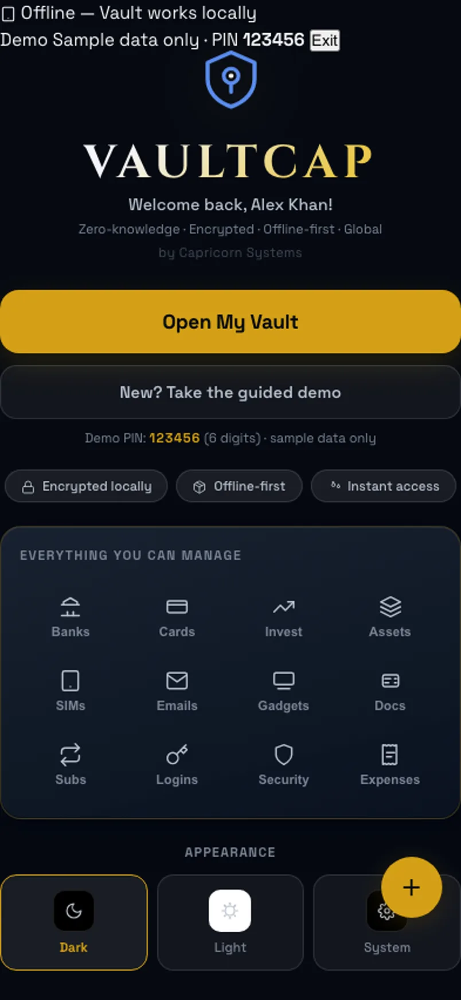

Illustrative story Illustrative story. People and data are fictional.
VaultCap · Dubai, UAE
How Omar backed up before swapping phones
Omar freelances across currencies. Phone for day balances, laptop for encrypted export, iPad when reviewing cards on the sofa.
“New phone. Same vault. No cloud rent.”

Before and after
Illustrative numbers from a fictional week.
Before
After VaultCap
A day with Omar
-
Currency glance
Omar’s phone dashboard shows AED and GBP sample balances before the first client call — multi-currency without opening three banking apps.
-
Cards check
On the sofa he reviews cards on the iPad before lunch, expiry dates visible, no glovebox archaeology.
-
Export on laptop
Laptop writes an encrypted .vos backup to a disk he owns — new phone week, no cloud rent, no “upload everything” pitch.
-
Security review
Security settings on the laptop get a once-over before the swap: demo labeled, passphrase habits intact.
-
Phone ready
New phone restores from the backup; the sample vault opens like nothing moved. He smiles at the boring success.
Watch it
A day across devices — silent walkthrough with captions. No autoplay with sound.
Read transcript
Omar reviews money on phone and iPad, exports on laptop, restores on a new phone. Fictional.
Features Omar uses
Illustrative story. People and data are fictional.